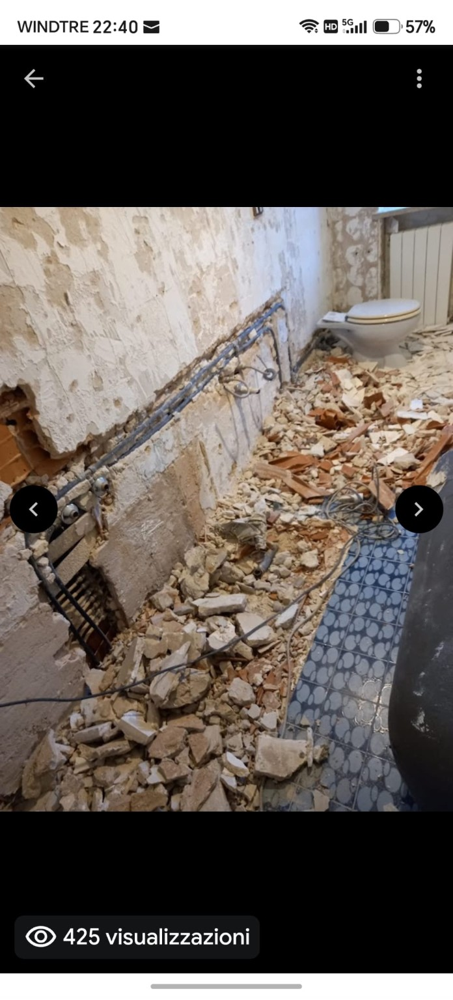
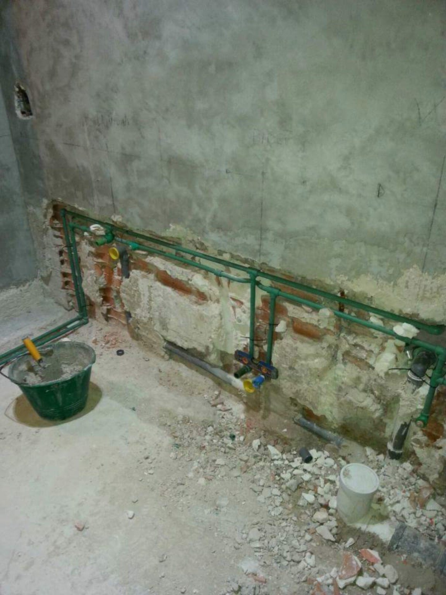
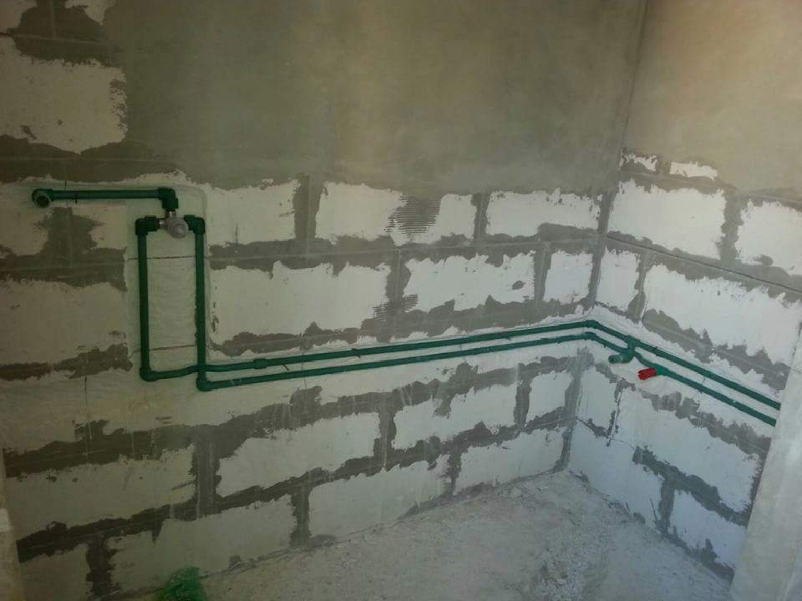
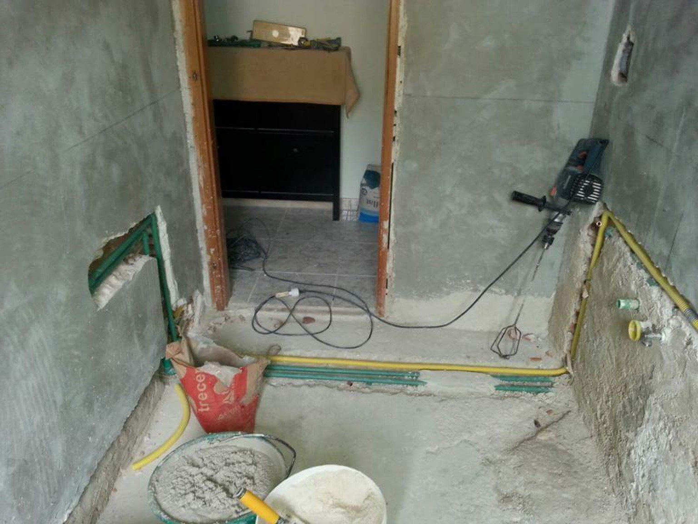
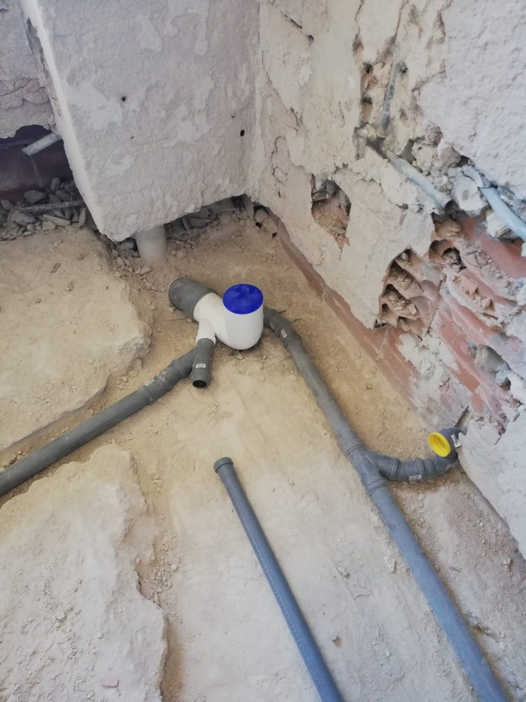
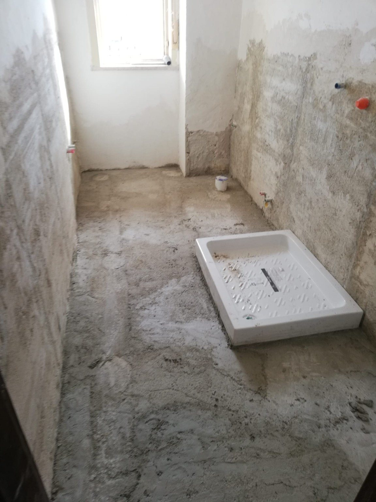
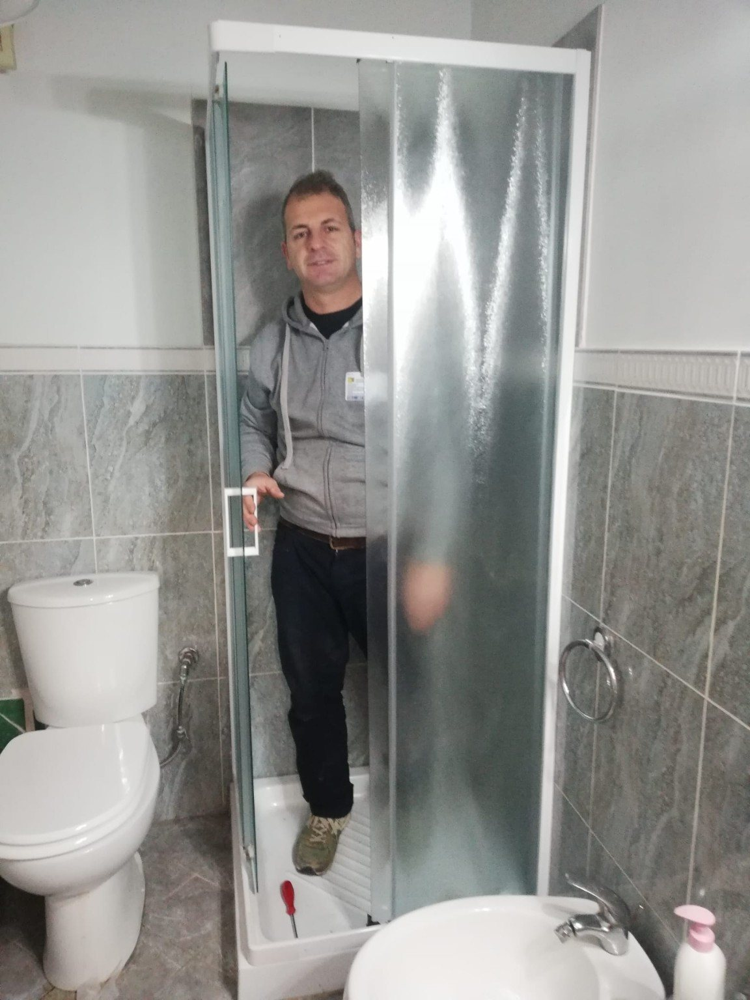
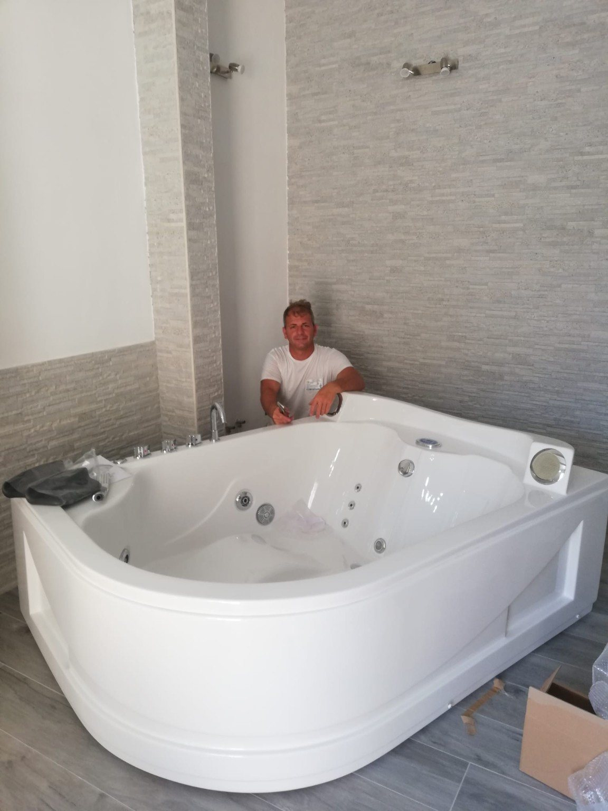
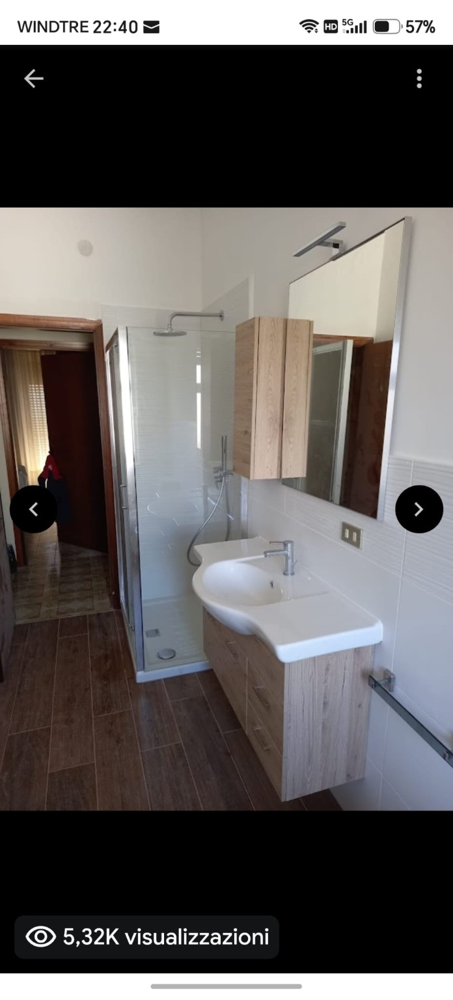
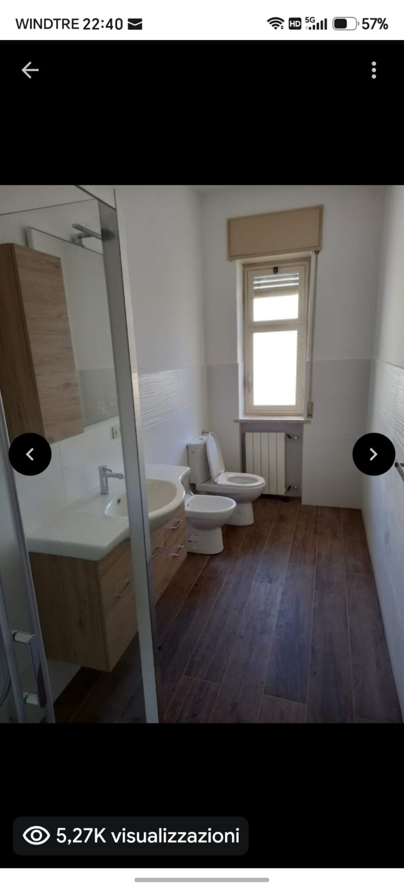

Dal grezzo al finito
Demolizioni, impianti, muratura e finiture.
GIANLUCA LATINA • SIRACUSA
Ristrutturazione bagno e lavori per la casa: demolizioni, impianti idraulico-sanitari, muratura, piastrelle, pavimenti, cartongesso e finiture.
IL SERVIZIO
Demolizioni, impianti, muratura e finiture.
Sanitari, box doccia, rivestimenti e pavimenti.
Lavorazioni coordinate in un unico progetto.
INTERVENTI PRINCIPALI
PRIMA • DURANTE • DOPO
Le fotografie sono ordinate per raccontare le fasi del lavoro: demolizione, impianti, area doccia, installazioni e risultato finale.










PARLIAMO DEL TUO PROGETTO
Invia alcune foto dell’ambiente, indica la zona e descrivi il risultato che vuoi ottenere. Valutiamo demolizioni, impianti, finiture e preventivo.